전자계산기조직응용기사 (2018-08-19 기출문제)
1과목: 전자계산기 프로그래밍
1. C 언어에서 이스케이프 시퀀스의 설명이 옳지 않은 것은?
- ＼n : null character
- ＼t : tab
- ＼b : backspace
- ＼r : carriage return
(정답률: 82%)

2. C 언어의 관계연산자 중 우선순위가 나머지 셋과 다른 하나는?
- ＞
- ＞=
- ＜
- !=
(정답률: 92%)
3. 어셈블리 명령에서 관계연산자가 아닌 것은?
- NE
- LT
- GQ
- EQ
(정답률: 59%)
4. 기계어에 대한 설명 중 가장 옳지 않은 것은?
- 기계마다 언어가 다르며 호환성이 없다.
- 프로그램의 실행 속도가 빠르다.
- 2진수를 사용하여 데이터를 표현한다.
- 사람 중심의 언어로서 유지보수가 용이하다.
(정답률: 87%)
5. C 언어에서 부호 없는 10진수 출력 명령에 사용되는 것은?
- %d
- %c
- %u
- %x
(정답률: 65%)
6. C 언어에서 표준 입력인 키보드로부터 문자열을 지정된 양식에 따라 읽어 변수 값을 문자열로 변환시켜 주는 함수는 무엇인가?
- getchar()
- putchar()
- scanf()
- printf()
(정답률: 75%)
7. 어셈블리어에서 라이브러리에 기억된 내용을 프로시저로 정의하여 서브루틴으로 사용하는 것과 같이 사용할 수 있도록 그 내용을 현재의 프로그램 내에 포함시켜 주는 명령은?
- SEGMENT
- ORG
- INCLUDE
- EXTRN
(정답률: 84%)
8. 시스템 프로그래밍에 가장 적합한 고급 언어는?
- C
- BASIC
- COBOL
- FORTRAN
(정답률: 88%)
9. 객체의 성질을 분해하고, 공통된 성질을 추출하여 슈퍼 클래스를 설정하는 일을 무엇이라 하는가?
- 추상화
- 메소드
- 정보은폐
- 메세지
(정답률: 76%)
10. 다음 프로그래밍 언어 중 객체지향 언어로 볼 수 없는 것은?
- ada
- c++
- cobol
- smalltalk
(정답률: 73%)
11. 객체지향프로그래밍(OOP)에서 전통적 시스템의 함수 또는 프로시저에 해당하는 연산 기능을 무엇이라고 하는가?
- Message
- Method
- Module
- Package
(정답률: 83%)
12. 작성된 표현식이 BNF의 정의에 의해 바르게 작성되었는지를 확인하기 위하여 만든 트리는?
- parse tree
- menu tree
- king tree
- home tree
(정답률: 87%)
13. C 언어에서 논리 곱(AND)을 나타내는 논리 연산자는?
- ∥
- !
- &&
- ＞
(정답률: 87%)
14. 어셈블리언어에 대한 설명으로 가장 옳지 않은 것은?
- 기계어 1라인 당 어셈블리 명령어가 대부분 1라인씩 대응된다.
- C, Java언어 등에 비하여 명령 실행 속도가 빠르다.
- 프로그래밍 시간이 오래 걸리고 디버깅이 어렵다.
- 사용자가 이해하기 쉬운 고급언어이다.
(정답률: 84%)
15. 객체지향프로그래밍(OOP)에서 데이터와 이 데이터를 조작하는 연산들이 하나의 모듈 내에서 결합되도록 하는 것을 무엇이라 하는가?
- 클래스
- 메소드
- 캡슐화
- 객체
(정답률: 73%)
16. 어셈블리어에서 논리적인 비교와 결과가 양수 또는 음수인지를 검사하여 상태 레지스터의 상태 비트를 설정하는 명령은?
- TEST
- NEG
- CWD
- LEA
(정답률: 60%)
17. 주 프로그램의 매개변수(parameter)가 부프로그램으로 넘어갈 때 실제 값이 전달되는 방식은?
- call by value
- call by reference
- call by name
- call by address
(정답률: 73%)
18. C 언어의 비트 연산자가 아닌 것은?
- ^
- ＜＜
- ~
- &&
(정답률: 64%)
19. 프로그램 제어방법 중 반복문과 가장 거리가 먼 것은?
- While 문
- Switch Case 문
- Do While 문
- For 문
(정답률: 84%)
20. 다음 제시된 프로그램의 수행 과정에 대한 순서가 옳은 것은?
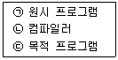
- ㉡ → ㉢ → ㉠
- ㉠ → ㉡ → ㉢
- ㉢ → ㉠ → ㉡
- ㉠ → ㉢ → ㉡
(정답률: 87%)
2과목: 자료구조 및 데이터통신
21. 양자화 스텝수가 5비트이면 양자화 계단수는?
- 16
- 32
- 64
- 128
(정답률: 79%)
22. 실제 표본값과 추정 표본값과의 차이만을 양자화하는 방식으로 1bit 양자화를 수행하는 방식은?
- FM
- PCM
- ASK
- DM
(정답률: 49%)
23. 채널 대역폭이 1MHz이고 S/N이 1일 때 채널용량(Mb/s)은?
- 1
- 2
- 3
- 4
(정답률: 80%)
24. TCP 프로토콜을 사용하는 응용 계층의 서비스가 아닌 것은?
- SNMP
- FTP
- Telnet
- HTTP
(정답률: 60%)
25. IP 주소로부터 물리적 주소로 변환하는 프로토콜은?
- ARP
- RARP
- ICMP
- DNS
(정답률: 71%)
26. 수신된 부호어의 해밍거리가 6일 때 검출할 수 있는 에러 개수는?
- 4
- 5
- 6
- 7
(정답률: 63%)
27. 2 out of 5 부호를 이용하여 에러를 검출하는 방식은?
- 패리티 체크 방식
- 군계수 체크 방식
- SQD 방식
- 정 마크(정 스페이스)방식
(정답률: 45%)
28. 다중화 방식 중 타임 슬롯(time slot)을 사용자의 요구에 따라 동적으로 할당하여 데이터를 전송할 수 있는 것은?
- Pulse Code Multiplexing
- Statistical Time Division Multiplexing
- Synchronous Time Division Multiplexing
- Frequency Division Multiplexing
(정답률: 55%)
29. QPSK(Quadrature PSK) 변조방식에서 변화되는 위상차는?
- 45°
- 90°
- 180°
- 위상차 없음
(정답률: 83%)
30. OSI-7계층 중 프로세스간의 대화 제어(dialogue control) 및 동기점(synchronization point)을 이용한 효율적인 데이터 복구를 제공하는 계층은?
- Data Link layer
- Network layer
- Transport layer
- Session layer
(정답률: 61%)
31. 해싱(hashing)에서 동일한 버켓 주소를 갖는 레코드들의 집합을 의미하는 것은?
- locality
- working set
- synonym
- collision
(정답률: 66%)
32. 제일 먼저 입력된 원소가 우선적으로 출력되며, 원소의 삽입은 뒤(rear)에서, 삭제는 앞(front)에서 이루어지는 자료 구조는?
- 큐
- 스택
- 트리
- 그래프
(정답률: 73%)
33. 다음 산술식을 Postfix로 옳게 표현한 것은?
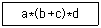
- **a+bcd
- *+a*bcd
- abc*+d*
- abc+*d*
(정답률: 72%)
34. 다음 그림에서 트리의 차수(degree)는?
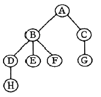
- 2
- 3
- 4
- 8
(정답률: 82%)
35. 데이터베이스의 3단계 스키마에 해당하지 않는 것은?
- 내부 스키마
- 외부 스키마
- 관계 스키마
- 개념 스키마
(정답률: 79%)
36. 색인 순차 파일의 색인 구역에 해당하지 않는 것은?
- Track Index Area
- Cylinder Index Area
- Master Index Area
- Overflow Index Area
(정답률: 80%)
37. 다음 자료에 대한 버블 정렬을 사용하여 오름차순 정렬할 경우 1회전 후의 결과는?
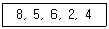
- 5, 6, 2, 4, 8
- 5, 8, 6, 2, 4
- 2, 8, 5, 6, 4
- 4, 8, 5, 6, 2
(정답률: 85%)
38. 스택의 응용 분야와 거리가 먼 것은?
- 인터럽트의 처리
- 운영체제의 작업 스케줄링
- 부프로그램 호출시 복귀주소 저장
- 컴파일러를 이용한 언어번역
(정답률: 65%)
39. 주어진 파일에서 인접한 2개의 레코드 키 값을 비교하여 그 크기에 따라 레코드 위치를 서로 교환하는 정렬 방식은?
- Insertion
- Bubble
- Quick
- Selection
(정답률: 78%)
40. 선형 자료 구조에 해당하지 않는 것은?
- 스택
- 큐
- 데크
- 트리
(정답률: 84%)
3과목: 전자계산기구조
41. 하드 디스크 드라이브(HDD)와 컴퓨터 메인보드 간의 연결에 사용되는 인터페이스 방식이 아닌 것은?
- SATA
- EIDE
- DDR4
- SCSI
(정답률: 78%)
42. 다음 중 연산 속도가 가장 빠른 주소 지정 방식(Addressing Mode)은?
- Direct Addressing Mode
- Indirect Addressing Mode
- Calculate Addressing Mode
- Immediate Addressing Mode
(정답률: 65%)
43. 채널을 이용한 입출력 제어 방식의 특징으로 가장 옳지 않은 것은?
- 다양한 입출력 장치와 단말 장치를 동시에 독립해서 동작시킬 수 없다.
- 입출력 동작을 중앙 처리 장치와는 독립적이면서 비동기적으로 실행한다.
- 멀티프로그래밍이 가능하다.
- 대용량 보조 기억 장치를 입출력 장치와 같은 레벨로 중앙 처리 장치와 독립해서 동작시킬 수 있다.
(정답률: 60%)
44. 하나 이상의 프로그램 또는 연속되어 있지 않은 저장 공간으로부터 데이터를 모은 다음, 데이터들을 메시지 버퍼에 넣고, 특정 수신기나 프로그래밍 인터페이스에 맞도록 그 데이터를 조직화하거나 미리 정해진 다른 형식으로 변환하는 과정을 일컫는 것은?
- Porting
- Converting
- Marshalling
- Streaming
(정답률: 57%)
45. 데이터를 고속으로 처리하기 위해 연산 장치를 병렬로 구성한 처리 구조로 벡터 계산이나 행렬 계산에 주로 사용되는 프로세서의 명칭으로 가장 옳은 것은?(오류 신고가 접수된 문제입니다. 반드시 정답과 해설을 확인하시기 바랍니다.)
- 코프로세서
- 다중 프로세서
- 배열 프로세서
- 대칭 프로세서
(정답률: 60%)
46. 캐시 기억 장치에서 적중률이 낮아질 수 있는 매핑 방법은?
- 연관 매핑
- 세트-연관 매핑
- 간접 매핑
- 직접 매핑
(정답률: 48%)
47. 다음 명령어 사이클에 대한 설명이 가장 옳지 않은 것은?
- 간접 사이클은 피연산 데이터가 있는 기억 장치의 유효 주소를 계산하는 과정이다.
- 인터럽트 사이클은 요청된 서비스 프로그램을 수행하여 완료할 때까지의 과정이다.
- 실행 사이클은 연산자 코드의 내용에 따라 연산을 수행하는 과정이다.
- 패치 사이클은 주기억 장치로부터 명령어를 꺼내어 디코딩하는 과정이다.
(정답률: 56%)
48. 불 함수식 F＝(A＋B)ㆍ(A＋C)를 가장 간소화한 것은?
- F＝A＋BC
- F＝B＋AC
- F＝A＋AC
- F＝C＋AB
(정답률: 81%)
49. 중앙처리장치의 기억 모듈에 중복적인 데이터 접근을 방지하기 위해서 연속된 데이터 또는 명령어들을 기억 장치 모듈에 순차적으로 번갈아 가면서 처리하는 방식으로 가장 옳은 것은?
- 복수 모듈
- 인터리빙
- 멀티플렉서
- 셀렉터
(정답률: 68%)
50. CPU에 두 개의 범용 레지스터와 하나의 상태 레지스터가 존재할 때 두 범용 레지스터의 값이 동일한지 조사하기 위한 방법으로 옳은 것은? (단, 그림에 보이는 상태 레지스터 내용을 참조하시오.)
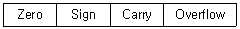
- 두 개의 레지스터의 내용을 뺀 후, Zero 여부를 조사한다.
- 두 개의 레지스터의 내용을 더한 후, Zero 여부를 조사한다.
- 두 개의 레지스터의 내용을 뺀 후, Overflow 여부를 조사한다.
- 두 개의 레지스터의 내용을 더한 후, Carry 여부를 조사한다.
(정답률: 54%)
51. 캐시의 각 워드에 카운터를 두고 접근할 때마다 카운터를 증가시키고 제거 시에는 카운터 값이 가장 적은 블록을 제거하는 방식은? (문제 오류로 실제 시험에서는 3,4번이 정답처리 되었습니다. 여기서는 3번을 누르면 정답 처리 됩니다.)
- FIFO
- FILO
- LRU
- LFU
(정답률: 77%)
52. 레지스터 사이의 데이터 전송 방법에 대한 설명으로 가장 옳지 않은 것은?
- 직렬 전송 방식에 의한 레지스터 전송은 하나의 클록 펄스 동안에 하나의 비트가 전송되고, 이러한 비트 단위 전송이 모여 워드를 전송하는 방식을 말한다.
- 병렬 전송 방식에 의한 레지스터 전송은 하나의 클록 펄스 동안에 레지스터 내의 모든 비트 즉, 워가 동시에 전송되는 방식을 말한다.
- 병렬 전송 방식에 의한 레지스터 전송은 직렬 방식에 비해 속도가 빠르고 결선의 수가 적다는 장점을 가지고 있다.
- 버스 전송 방식에 의한 레지스터 전송은 공통의 통신로를 이용하므로 병렬 전송 방식에 의한 레지스터 전송 방식보다 결선의 수가 적다.
(정답률: 62%)
53. 하나의 입력 정보를 여러 개의 출력선 중에 하나를 선택하여 정보를 전달하는데 사용하는 것은?
- 디코더(Decoder)
- 인코더(Encoder)
- 멀티플렉서(Multiplexer)
- 디멀티플렉서(Demultiplexer)
(정답률: 48%)
54. 아래 보기와 같이 명령어에 오퍼랜드 필드를 사용하지 않고 명령어만 사용하는 명령어 형식은?
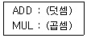
- Zero-Address Instruction Mode
- One-Address Instruction Mode
- Two-Address Instruction Mode
- Three-Address Instruction Mode
(정답률: 64%)
55. RISC(Reduced Instruction Set Computer)와 CISC(Complex Instruction Set Computer)에 대한 설명 중 가장 옳지 않은 것은?
- RISC는 실행 빈도가 적은 하드웨어를 제거하여 자원 이용률을 높이는 장점이 있다.
- RISC는 프로그램의 길이가 길어지므로 CISC보다 수행 속도가 느린 단점이 있다.
- CISC는 고급 언어를 이용하여 알고리즘을 쉽게 표현 할 수 있는 장점이 있다.
- CISC는 복잡한 명령어군을 제공하므로 컴퓨터 설계 및 구현 시 많은 시간을 필요로 하는 단점이 있다.
(정답률: 60%)
56. 10진수 3은 3-초과 코드(Excess-3 Code)에서 어떻게 표현되는가?
- 0011
- 0110
- 0101
- 0100
(정답률: 58%)
57. 인터럽트의 처리 루틴의 순서로 올바른 것은?
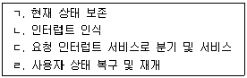
- ㄱ → ㄴ → ㄷ → ㄹ
- ㄴ → ㄷ → ㄱ → ㄹ
- ㄴ → ㄱ → ㄹ → ㄷ
- ㄴ → ㄱ → ㄷ → ㄹ
(정답률: 77%)
58. 인터럽트 우선순위를 결정하는 Polling 방식에 대한 설명으로 옳지 않은 것은?
- 많은 인터럽트 발생 시 처리 시간 및 반응 시간이 매우 빠르다.
- S/W 적으로 CPU가 각 장치 하나하나를 차례로 조사하는 방식이다.
- 조사 순위가 우선순위가 된다.
- 모든 인터럽트를 위한 공통의 서비스 루틴을 갖고 있다.
(정답률: 48%)
59. 컴퓨터의 중앙 처리 장치(CPU)는 4가지 단계를 반복적으로 거치면서 동작한다. 4가지 단계에 속하지 않는 것은?
- Fetch Cycle
- Branch Cycle
- Interrupt Cycle
- Execute Cycle
(정답률: 72%)
60. 프로그램이 가능한 논리 소자로, n개의 입력에 대하여 2n개 이하의 출력을 만들 수 있는 논리회로는?
- RAM
- ROM
- PLA
- Pipeline Register
(정답률: 54%)
4과목: 운영체제
61. 운영체제의 발달 과정을 순서대로 옳게 나열한 것은?
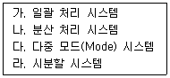
- 가 → 라 → 다 → 나
- 다 → 나 → 라 → 가
- 가 → 다 → 라 → 나
- 다 → 라 → 나 → 가
(정답률: 56%)
62. 운영체제의 기능으로 가장 거리가 먼 것은?
- 사용자 인터페이스 제공
- 자원 스케줄링
- 데이터의 공유
- 원시 프로그램을 목적 프로그램으로 변환
(정답률: 78%)
63. 다음 표는 고정 분할에서의 기억장치 단편화(Fragmentation) 현상을 보이고 있다. 외부단편화(External Fragmentation)의 크기는 총 얼마인가? (단, 페이지 크기의 단위는 K를 사용한다.)
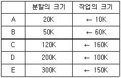
- 480K
- 430K
- 260K
- 170K
(정답률: 59%)
64. 스케줄링의 목적으로 가장 거리가 먼 것은?
- 모든 작업들에 대해 공평성을 유지하기 위하여
- 단위 시간당 처리량을 최대화하기 위하여
- 응답 시간을 빠르게 하기 위하여
- 운영체제의 오버헤드를 최대화하기 위하여
(정답률: 70%)
65. 모니터에 대한 설명으로 옳지 않은 것은?
- 모니터의 경계에서 상호배제가 시행된다.
- 자료 추상화와 정보은폐 기법을 최초로 한다.
- 공유 데이터와 이 데이터를 처리하는 프로시저로 구성된다.
- 모니터 외부에서도 모니터 내의 데이터를 직접 액세스할 수 있다.
(정답률: 79%)
66. 교착상태의 해결 방법 중 회피(Avoidance) 기법과 가장 밀접한 관계가 있는 것은?
- 점유 및 대기 방지
- 비선점 방지
- 환형 대기 방지
- 은행원 알고리즘 사용
(정답률: 79%)
67. 다음은 교착상태 발생조건 중 어떤 조건을 제거하기 위한 것인가?
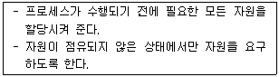
- Mutual Exclusion
- Hold and Wait
- Non-preemption
- Circular Wait
(정답률: 52%)
68. 페이지 대치의 설명으로 가장 옳지 않은 것은?
- 페이지의 대치는 그 페이지가 갱신되었기 때문이다.
- 페이지 부재 오류가 발생하였을 때 페이지 대치가 일어난다.
- 앞으로 전혀 참조되지 않을 페이지를 대치하는 것이 이상적이다.
- 한 프로세스 내의 모든 페이지를 수용할 수 있는 양의 프레임이 그 프로세스에 할당되면 페이지 오류율은 0이다.
(정답률: 27%)
69. 분산 운영체제에서 사이트(Site) 간 마이그레이션(Migration)의 종류에 해당하지 않는 것은?
- Data Migration
- Computation Migration
- Control Migration
- Process Migration
(정답률: 30%)
70. FIFO와 RR 스케줄링 방식을 혼합한 것으로 상위 단계에서 완료되지 못한 작업은 하위 단계로 전달되어 마지막 단계에서는 RR 방식을 사용하는 것은?
- SJF
- SRT
- HRN
- Multilevel Queue
(정답률: 55%)
71. 페이지 부재율(Page Fault Ratio)과 스래싱(Thrashing)의 관계에 대한 설명 중 가장 옳은 것은?
- 페이지 부재율이 크면 스래싱이 많이 일어난 것이다.
- 페이지 부재율과 스래싱은 관계가 없다.
- 다중 프로그래밍의 정도가 높아지면 페이지 부재율과 스래싱이 감소한다.
- 스래싱이 많이 발생하면 페이지 부재율이 감소한다.
(정답률: 54%)
72. 운영체제의 운용 기법 중 중앙 처리 장치의 시간을 각 사용자에게 균등하게 분할하여 사용하는 체제로서 모든 컴퓨터 사용자에게 똑같은 서비스를 제공하는 것을 목표로 삼고 있으며, 라운드 로빈 스케줄링을 사용하는 것은?
- Real-Time Processing System
- Time Sharing System
- Batch Processing System
- Distributed Processing System
(정답률: 67%)
73. 빈 기억 공간의 크기가 20K, 16K, 8K, 40K 일 때 기억 장치 배치 전략으로 “Best Fit"을 사용하여 17K의 프로그램을 적재할 경우 내부 단편화의 크기는 얼마인가?
- 3K
- 23K
- 64K
- 67K
(정답률: 72%)
74. HRN 방식으로 스케줄링할 경우, 입력된 작업이 다음과 같을 때 우선순위가 가장 높은 것은?
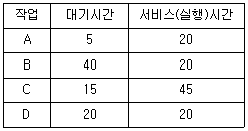
- A
- B
- C
- D
(정답률: 61%)
75. PCB(Process Control Block)가 갖고 있는 정보가 아닌 것은?
- 프로세스의 현재 상태
- 프로세스 고유 식별자
- 스케줄링 및 프로세스의 우선순위
- 할당되지 않은 주변 장치의 상태 정보
(정답률: 74%)
76. 상호배제(Mutual Exclusion) 기법을 사용하여 임계영역(Critical Region)을 보호하였다. 다음 설명 중 가장 옳지 않은 것은?
- 어떤 프로세스가 임계영역 내의 명령어 실행 중 인터럽트(Interrupt)가 발생하면 이 프로세스는 실행을 멈추고, 다른 프로세스가 이 임계영역 내의 명령어를 실행한다.
- 임계영역 내의 프로그램 수행 중에 교착상태(Deadlock)가 발생하면 교착상태가 해제될 때까지 임계영역을 벗어 날 수 없다. 따라서 임계영역 내의 프로그램에서는 교착상태가 발생하지 않도록 해야 한다.
- 임계영역 내의 프로그램에서 무한 반복(Endless Loop)이 발생하면 임계영역을 탈출할 수 없다. 따라서 임계영역 내의 프로그램에서는 무한 반복이 발생하지 않도록 해야 한다.
- 여러 프로세서들 중에 하나의 프로세스만이 임계영역을 사용할 수 있도록 하여 임계영역에서 공유 변수 값의 무결성을 보장한다.
(정답률: 50%)
77. 프로세스가 전송하는 메시지의 형태가 아닌 것은?
- 형식 메시지
- 가변 길이 메시지
- 상대 길이 메시지
- 고정 길이 메시지
(정답률: 54%)
78. 시스템 소프트웨어의 역할로 가장 거리가 먼 것은?
- 프로그램을 메모리에 적재한다.
- 인터럽트를 관리한다.
- 복잡한 수학 계산을 처리한다.
- 기억 장치를 관리한다.
(정답률: 64%)
79. UNIX에서 커널의 기능이 아닌 것은?
- 입/출력 관리
- 명령어 해석 및 실행
- 기억 장치 관리
- 프로세스 관리
(정답률: 67%)
80. 준비 상태 큐에 프로세스 A, B, C가 차례로 도착하였다. 라운드 로빈(Round Robin)으로 스케줄링할 때 타임 슬라이스를 4초로 한다면 평균 반환 시간은?
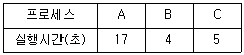
- 12초
- 14초
- 17초
- 18초
(정답률: 46%)
5과목: 마이크로 전자계산기
81. 컴파일된 주프로그램, 부프로그램, 자이브러리 서브루틴, 입출력 제어루틴을 연결시켜 하나의 수행 가능한 프로그램으로 만들어 주기억장치에 적재하여 수행시키는 시스템 프로그램은?
- linkage editor
- routine load program
- loader
- compiler
(정답률: 66%)
82. 다음 그림은 ROM의 기본구성도이다. Ⓐ 부분의 기능에 대한 명칭으로 가장 옳은 것은?
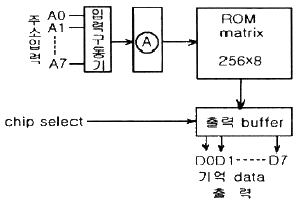
- decoder
- shift register
- address buffer
- encoder
(정답률: 68%)
83. 마이크로컴퓨터에서 병렬 입출력 인터페이스가 아닌 것은?
- PIO
- PPI
- ACIA
- PIA
(정답률: 78%)
84. 누산기(accumulator)를 clear 하고자 할 때 사용하면 효과적인 명령어는?
- EX-OR
- SHIFT
- ROTATE
- EXCHANGE
(정답률: 70%)
85. 보조기억장치에 저장되어 있는 정보를 주기억장치로 읽어오는 작업을 의미하는 것은?
- transfer
- load
- store
- compile
(정답률: 72%)
86. 4개의 플립플롭으로 구성한 3비트 리플카운터(ripple counter)는 입력 주파수를 어떤 주파수의 파형으로 변환하는가?
- 1/4 주파수의 파형
- 1/8 주파수의 파형
- 1/16 주파수의 파형
- 1/32 주파수의 파형
(정답률: 60%)
87. 마이크로컴퓨터에서 중앙처리장치와 기억장치, 입·출력장치 간의 데이터를 주고받기 위해 공통으로 연결되는 버스는?
- 어드레스 버스
- 데이터 버스
- 제어 버스
- 채널
(정답률: 71%)
88. 다음 중 캐스케이드(casecade)스택의 특징으로 옳은 것은?
- 스택 포인터를 따로 지정할 필요가 없다.
- PUSH할 때마다 스택 포인터가 증가한다.
- 기억 번지내에 구성되므로 융통선이 높다.
- 스택의 bottom이 정의되지 않는다.
(정답률: 54%)
89. 스택을 이용하여 산술식을 표현할 때의 연산자(operator) 표시방법은?
- infix
- prefix
- polish
- postfix
(정답률: 65%)
90. 스택에 대한 설명 중 틀린 것은?
- SP라 불리는 포인터를 가지고 있다.
- PUSH와 POP 명령을 사용한다.
- FIFO 구조를 가지고 있다.
- Return address를 저장할 때 사용된다.
(정답률: 75%)
91. 다음 그림에 대한 설명 중 틀린 것은?
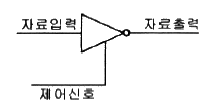
- 제어 신호가 낮은 상태(Low)일 때 자료출력은 1이다.
- 인버팅 버터이다.
- 신호 증폭에 사용될 수 있다.
- 이와 같은 종류의 버퍼를 3상태(Tri-State) 장치라고 한다.
(정답률: 62%)
92. 컴퓨터의 명령에 대한 설명 중 틀린 것은?
- 연산자(operation code)는 컴퓨터가 실행해야 할 연산의 종류를 나타낸다.
- 피연산자나 데이터를 저장 하는 부분이 오퍼랜드(operand)이다.
- 기억 장소가 특별히 지정되지 않고 레지스터에 바로 처리 되는 것을 직접 명령이라고 한다.
- 명령어 형식은 연산자 이후에 데이터나 주소 등 반드시 두 개 이상의 필드로 구성된다.
(정답률: 70%)
93. 마이크로프로세서(MPU)의 구성요소에 속하지 않는 것은?
- ALU
- CLOCK
- REGISTER
- PROGRAM COUNTER
(정답률: 57%)
94. 시스템 소프트웨어에 속하지 않는 것은?
- 패키지(apckage)
- 컴파일러(compiler)
- 어셈블러(assembler)
- 인터프리터(interpreter)
(정답률: 68%)
95. 어떤 마이크로컴퓨터 시스템의 버스 사이클과 DMA 전송을 버스트(burst) 방식으로 실행할 경우 10바이트 데이터를 고속 I/O 주변장치의 DMA 전송시 몇 번의 시스템 버스 이양 요청과 양도가 이루어지는가? (단, 이양 요청과 양도를 합하여 1회로 본다.)
- 1회
- 2회
- 10회
- 20회
(정답률: 47%)
96. CPU에서 연산 시 한 개의 오퍼랜드(Operand) 역할을 하고, 연산의 결과가 저장되는 레지스터는?
- 누산기(Accumulator)
- 데이터 계수기(Data Counter)
- 프로그램 계수기(Program Counter)
- 명령 레지스터(Instruction Register)
(정답률: 74%)
97. 자료전송 방법에 관한 설명으로 옳지 않은 것은?
- 비동기 전송에서는 문자와 문자 사이 시간 간격은 일정하지 않다.
- 비동기 전송에서는 시작 비트와 정지 비트가 필요하다.
- 동기 전송에서는 송신 측과 수신 측의 클록에 대한 동기가 필요하다.
- 동기 전송은 1200 bps 이하의 통신 선로에 적합하다.
(정답률: 68%)
98. 어느 프로그램 중 0123 번지에 CALL A 명령이 있다. 이 CALL A를 수행한 후 PC에 기억된 값은? (단, 명령어의 길이는 8비트이다.)
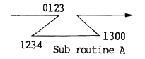
- 0123
- 0124
- 0131
- 1300
(정답률: 67%)
99. 어셈블러의 기능에 해당되지 않는 것은?
- format conversion
- storage allocation
- data generation
- memory loading
(정답률: 35%)
100. 주소(address) 버스 A0 ~ A11을 이용해서 저장할 수 있는 기억 용량의 크기는 몇 킬로바이트(kilo byte)인가? (단, 보기에서 kilo byte의 단위는 KB로 표시한다.)
- 2 KB
- 4 KB
- 8 KB
- 16 KB
(정답률: 51%)